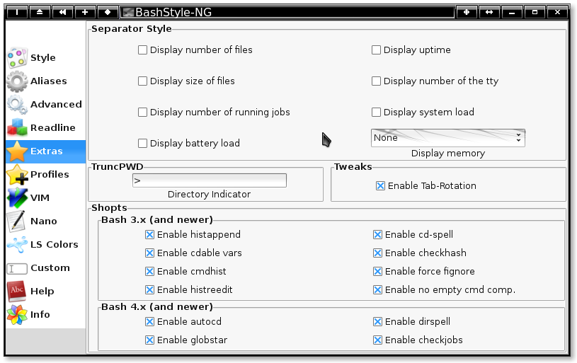

Chapter 5: Extras

Display number of files:
When using the Separator style, display the amount of files in the current directory.
Display uptime:
When using the Separator style, display the System's uptime.
Display size of files:
When using the Separator style, display the size of the files in the current directory.
Display number of the TTY:
When using the Separator style, display the current TTY's number.
Display number of running hobs:
When using the Separator style, display the number of running jobs [processes].
Display system load:
When using the Separator style, display the System Load [1 min].
Display battery load:
When using the Separator style, display the Battery Load [using apm].
Display Memory:
When using the Separator style, display the free or used RAM (or both) in MB.
Directory Indicator:
When using truncpwd for displaying the workdir, this char is used as directory indicator,
eg: if set to \ it will look like: \home\chris\Desktop instead of /home/chris/Desktop.
Enable Tab-Rotation
When enabled, you can use [TAB] to rotate between possible completions.
Enable histappend:
When enabled, Append new history content instead of overwriting it.
[only if HISTCONTROL is not erasedups]
Enable cd-spell:
When enabled, it works around misstyped paths, eg:
`cd /usr/sarhe' will still `cd /usr/share'
as long as the first and the last letter are correct and there's no other possibility.
Enable cdable vars:
When enabled, treat non-existing pathnames as variables,
so `cd HOME' would when be the same than `cd $HOME'
Enable checkhash:
When enabled, check if hash is up-to-date, else perform a normal pathsearch.
Enable cmdhist:
When enabled, multi-line commands are saved in a single history-line.
Enable force fignore:
When enabled, completions masked by FIGNORE are also hidden, if there would then be no result.
Enable histreedit:
When enabled, it allows reediting of wrong history substitutions.
Enable no empty cmd comp.:
When enabled, don't list all possible commands then pressing [TAB] on an empty commandline.
Enable autocd:
When enabled, trying to execute a "command" that is not an executable, but the name of
an existing directory, then cd into that directory rather than erroring.
Bash 4.0+ only
Enable dirspell:
When enabled, this is similar to cd-spell, but for directories and only during completion.
Bash 4.0+ only
Enable globstar:
When enabled, a new wildcard is available `**', it matches everything in any directory-depth.
Bash 4.0+ only
Enable checkjobs:
When enabled, exiting the shell while there are still processes in the background,
print a warning rather than logging out and killing those processes.
Bash 4.0+ only